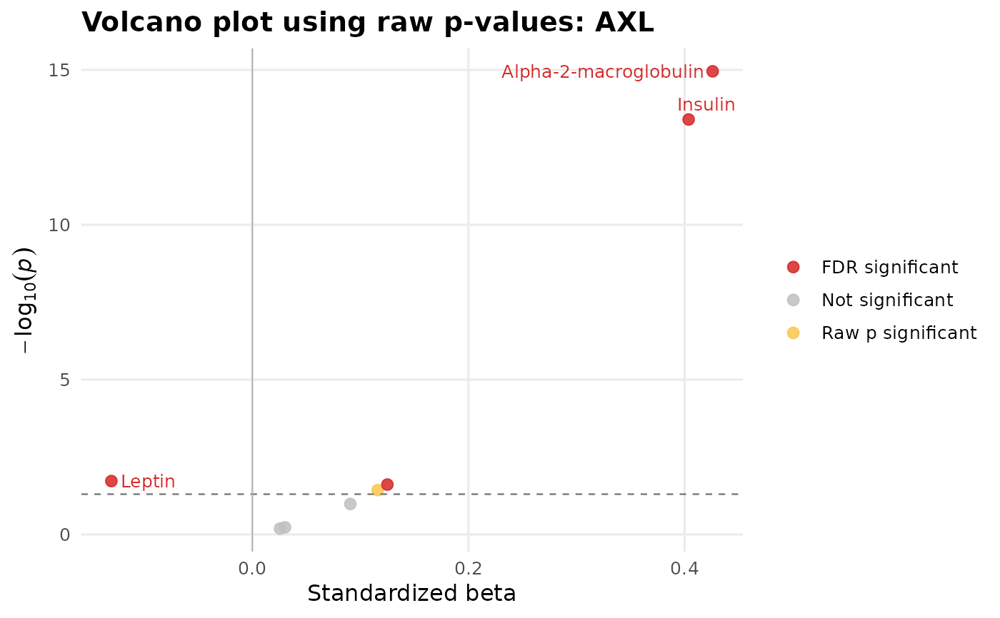
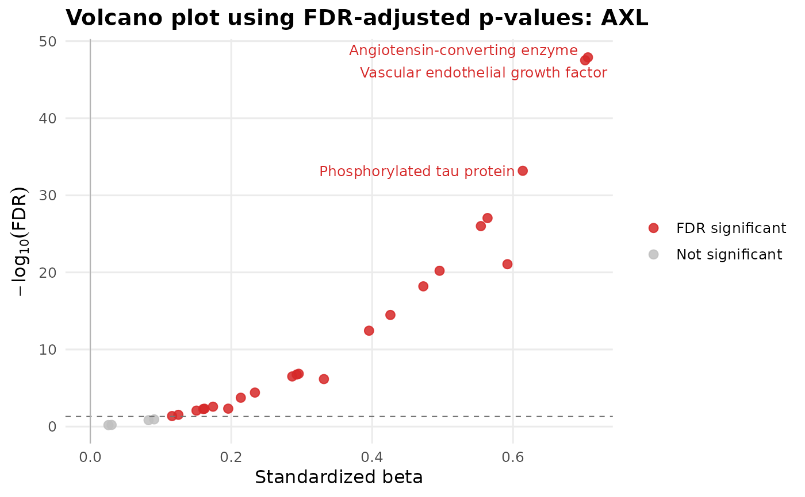

Screen a set of predictor variables against one outcome and visualize the association results as volcano plots. The function supports continuous outcomes using standardized beta values, and two-group categorical outcomes using either Cohen-style standardized effects or log2 fold change effects. Optional covariates are included in the model for each predictor.
Usage
PlotVolcanoEffects(
data,
predictor_vars,
outcome_var,
covariates = NULL,
OutcomeType = c("auto", "continuous", "categorical"),
EffectMetric = c("auto", "cohens_d", "log2fc"),
AdjustMethod = "fdr",
Alpha = 0.05,
Format = c("tiered", "classic", "fdr_only", "directional", "effect_gradient",
"minimal", "neon"),
LabelMode = c("none", "top_n", "significant", "fdr", "extreme"),
TopN = 10,
Relabel = TRUE,
codebook = NULL,
InteractiveLabels = TRUE,
Data = lifecycle::deprecated(),
xVars = lifecycle::deprecated(),
yVar = lifecycle::deprecated(),
Covariates = lifecycle::deprecated(),
Codebook = lifecycle::deprecated()
)Arguments
- data
A data frame.
- predictor_vars
Character vector of predictor variable names to screen.
- outcome_var
Character string naming the outcome variable.
- covariates
Optional character vector of covariate variable names.
- OutcomeType
Outcome type. One of
"auto","continuous", or"categorical". If"auto", numeric outcomes are treated as continuous and nonnumeric two-level outcomes are treated as categorical.- EffectMetric
Effect metric. One of
"auto","cohens_d", or"log2fc". Used for two-group categorical outcomes. For continuous outcomes, the effect is always a standardized beta from a model using scaled predictor and scaled outcome.- AdjustMethod
Multiple-comparison correction method passed to
stats::p.adjust(). Default is"fdr".- Alpha
Significance threshold for raw and adjusted p-values. Default is
0.05.- Format
Color format. One of
"tiered","classic","fdr_only","directional","effect_gradient","minimal", or"neon".- LabelMode
Labeling mode. One of
"none","top_n","significant","fdr", or"extreme".- TopN
Number of variables to label when
LabelModeis"top_n"or"extreme". Default is10.- Relabel
Logical. If
TRUE, variable labels are used when available. Labels are pulled first fromCodebookif supplied, then from variable label attributes. Default isTRUE.- codebook
Optional codebook data frame with columns
VariableandLabel.- InteractiveLabels
Logical. If
TRUE, atextaesthetic is added for compatibility withplotly::ggplotly(tooltip = "text"). Default isTRUE.- Data
Deprecated (since 19.15.0). Use
datainstead.- xVars
Deprecated (since 19.15.0). Use
predictor_varsinstead.- yVar
Deprecated (since 19.15.0). Use
outcome_varinstead.- Covariates
Deprecated (since 19.15.0). Use
covariatesinstead.- Codebook
Deprecated (since 19.15.0). Use
codebookinstead.
Value
A named list with RawPPlot, FDRPlot, and ResultsTable.
RawPPlot uses -log10(PValue) on the y-axis. FDRPlot uses
-log10(FDR) on the y-axis. ResultsTable is a tibble with one row per
analyzed predictor.
Details
Missingness is handled pairwise by model, so each predictor is analyzed using all complete observations available for that predictor, the outcome, and any covariates. Invalid predictor variables are removed with a warning.
Examples
data(SampleData)
data(SampleVariableTypes)
# Attach labels and factor levels for readable point labels
Labelled <- RevalueData(SampleData, SampleVariableTypes)$RevaluedData
predictors <- c("Alpha_1_Antitrypsin", "Alpha_2_Macroglobulin",
"Apolipoprotein_A1", "Apolipoprotein_B", "C_Reactive_Protein",
"Cortisol", "Insulin", "Leptin")
# Continuous outcome, adjusted for age
cont <- PlotVolcanoEffects(
data = Labelled,
predictor_vars = predictors,
outcome_var = "AXL",
covariates = "age",
OutcomeType = "continuous",
LabelMode = "top_n",
TopN = 3
)
cont$RawPPlot

# Categorical outcome (Diagnosis), Cohen's d effect metric
cat_res <- PlotVolcanoEffects(
data = Labelled,
predictor_vars = predictors,
outcome_var = "Diagnosis",
OutcomeType = "categorical",
EffectMetric = "cohens_d",
LabelMode = "top_n",
TopN = 3
)
cat_res$RawPPlot
